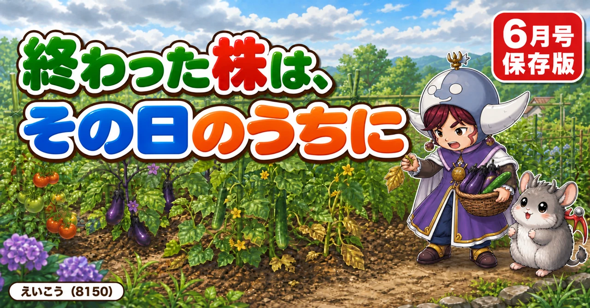
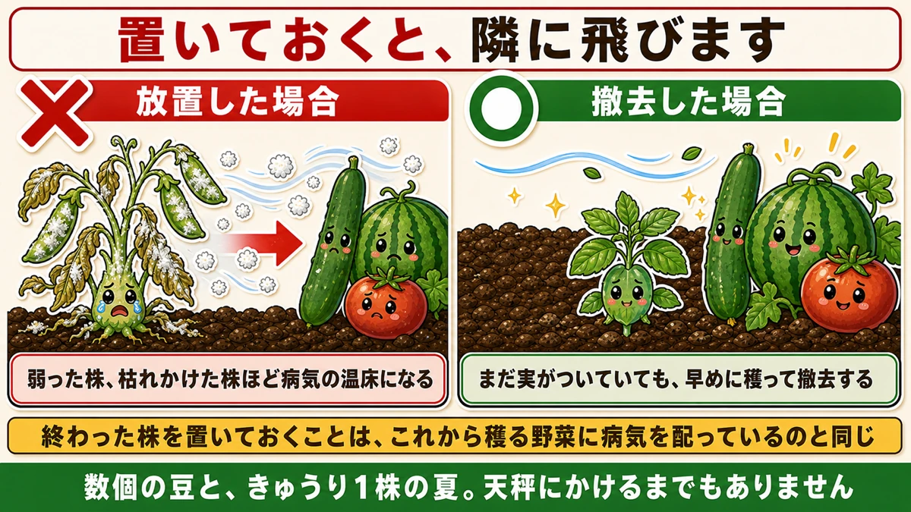
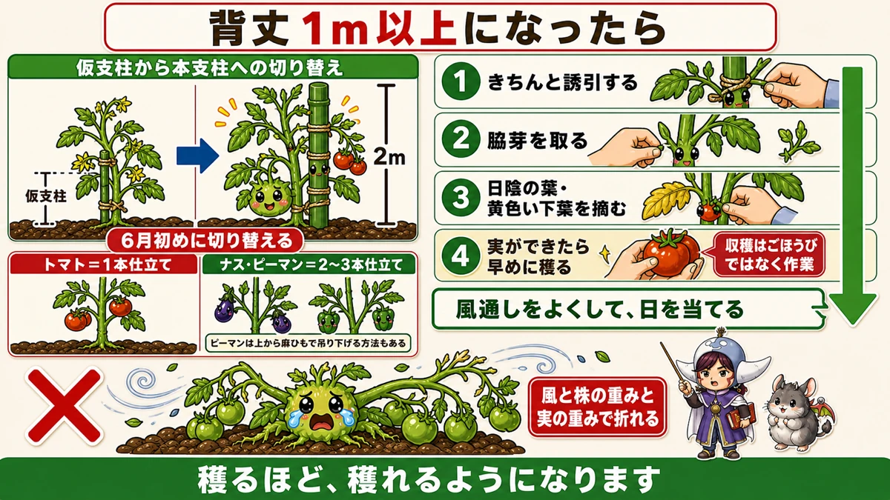
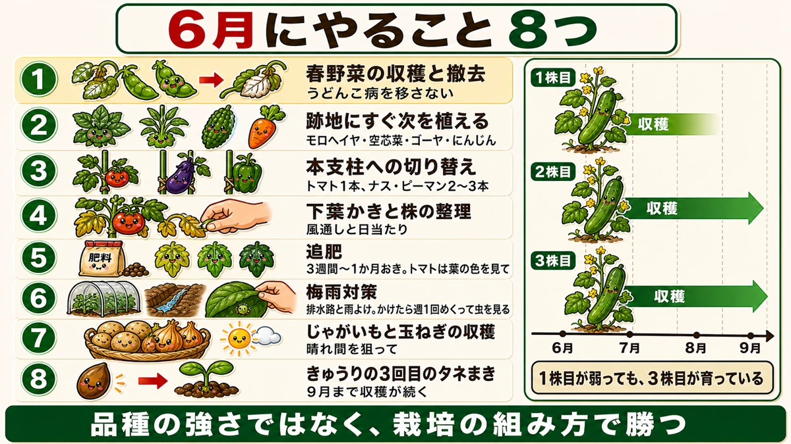

6月にまく・植える野菜｜春野菜の片づけと跡地の使い方、本支柱と誘引、早どり、追肥、梅雨の管理

どうも、8150（えいこう）です🌱 家庭菜園歴8年、理科の教員免許を持っていて、有機・無農薬で野菜を育てています。
📖 この記事の目次
この記事で分かること
- 6月は、4月から5月に植えた夏野菜が収穫を迎えはじめる月です。収穫と、株の手入れを同時に進めていきます。
- スナップえんどう、玉ねぎ、にんにく、そら豆など、春の野菜は収穫が終わります。終わった株は、なるべく早く片づけます。置いておくと、うどんこ病などが夏野菜に移る可能性があります。
- 空いた場所は、そのままにせず、次の野菜の準備をします。にんじんは、梅雨のあいだにまくと芽が出やすい、と説明されます。
- トマト、なす、ピーマンは、仮の支柱から長い本支柱に切り替える時期です。
- きゅうりやピーマンは、早めに収穫すると株の負担が減ります。とり遅れると、大きくなりすぎたきゅうりが株を疲れさせます。収穫は、ごほうびであると同時に、株を元気に保つための大事な作業でもあります。
- 追肥は、植えてから1か月ほどが最初の目安です。ただし、トマトは肥料が効きすぎると実のつきが悪くなるので、葉や茎のようすを見て決めます。
6月になると、畑の景色が一気に変わります。春に収穫していた野菜が終わり、夏野菜がぐんぐん背を伸ばして、最初の実をつけはじめます。
うれしい季節ですが、やることも一気に増えます。梅雨に入ると雨が続き、病気も出やすくなります。この時期の手入れが、夏から秋にかけての収穫に影響してきます。
この記事では、6月の畑でやることを、順番に書いていきます。説明が分かれているところは、両方の考え方を並べておきますね。

早見：6月の畑の基本（ひと目で分かる目安）
春野菜
- スナップえんどう、玉ねぎ、にんにく、そら豆、いちごなどは収穫の終わりの時期
- 収穫が終わった株は、なるべく早く片づける
- まだ実がついていても、病気が出ているなら早めに収穫して片づける
- いちごは、元気な株のランナー（つる）から、秋に植える苗を作る方法もある
夏野菜
- トマト：1本仕立て。2mほどの本支柱に切り替え、わき芽を取る
- なす：2〜3本仕立て。枝の向きに合わせて支柱を立てる
- ピーマン：1本の支柱で支え、伸びた枝はひもで吊る方法もある
- きゅうり：早めに収穫し、下の葉を整理して風通しをよくする
跡地にまく・植える野菜
- にんじん：6月中旬から下旬、梅雨のあいだにまく
- つるありいんげん：6月下旬にまくと、涼しくなる秋に収穫できる例
- とうもろこし：暑さや病気に強い品種を選んで、今からまく例
- きゅうり：6月でも植えられる。地這いきゅうりも向いている
作業の手順
手順1：収穫と管理を同時に進める
6月は、4月から5月に植えた夏野菜が、いよいよ収穫を迎える時期です。収穫が始まると、収穫の作業と一緒に、株の手入れもやっていかなければいけません。
また、6月になると気温が一気に上がり、梅雨で雨も増えます。野菜の育つスピードが速くなるので、1週間畑に行かないだけで、ずいぶん景色が変わっていることもあります。できるだけこまめに畑に通うのが、6月を乗り切るコツです。行けない日が続きそうなときは、その前に収穫と誘引だけでも済ませておきましょう。
手順2：収穫が終わった春野菜を片づける
スナップえんどう、玉ねぎ、にんにく、いちご、そら豆などの春の野菜は、収穫の時期を迎えているか、もう収穫が終わっていると思います。
収穫が終わった野菜は、なるべく早く片づけておきましょう。収穫を終えたスナップえんどうを畑に置いたままにしていると、うどんこ病が広がっていることがあります。うどんこ病が出ている野菜の近くに、きゅうりやすいか、トマトなどを植えていると、病気が移ってしまう可能性がある、と説明されます。
手順3：実がついていても、病気が出ていたら片づける
「まだ実がついているから、もったいない」と思いますよね。でも、うどんこ病などが出ている株なら、残っている実は早めに収穫して、株を片づけるほうがよい、という説明があります。うどんこ病を、これから長く育てる夏野菜に移さないことを優先します。
ただし、元気ないちごの株は、すぐに片づけずに、秋に植える苗作りに使うこともできます（あとで書きます）。病気の出ている株と、元気な株は分けて考えてください。
手順3の補足：玉ねぎとにんにくの収穫と乾かし方
玉ねぎやにんにくは、畑の株の8割ぐらいの葉が倒れてきたころが、収穫の目安と説明されます。葉が立ったままのうちに収穫すると、水分が多く、長く保存するのに向かない、という説明です。
収穫したら、すぐに持ち帰らずに、畑で乾かします。最低でも30分、時間に余裕があれば2〜3時間ほど乾かしておく、という例があります。持ち帰ったあとは、ビニール袋に入れず、束ねて風通しのよい日陰につるしたり、段ボールなどに入れて日陰に置いたりして保存します。
手順4：跡地を空けたままにしない
春の野菜を片づけたあとの場所を、そのまま放っておくと、雑草が生えたり、虫がすみついたりします。片づけが終わったら、次に植える野菜の準備を始めましょう。
手順5：にんじんは、梅雨のあいだにまく
にんじんは、タネをまいてから芽が出るまでのあいだ、土が乾かないことがとても大切な野菜です。だから、雨の多い梅雨のあいだにまくと、芽が出やすい、と説明されます。
6月中旬から下旬にまく準備を進めておけば、失敗することなく芽が出てくる、という説明があります。6月下旬から7月上旬の梅雨の真っ最中にまくと、すっと芽が出て、成功しやすくなる、という説明もあります。どちらも、梅雨の時期を外さないことがポイントです。
手順6：秋に向けて、いんげんやとうもろこしをまく
つるありいんげんの中には、タネをまいてから65日ほどで収穫できる品種もあります。6月下旬にまけば、涼しくなる9月から10月ごろに収穫できる、という例があります。いんげんは、意外と暑さや乾燥に弱いので、真夏より秋に実をつけるようにまくほうが育てやすい、という考え方です。
とうもろこしは、暑さや病気に強い品種を選べば、今からでも育てられる、という説明があります。
手順7：いちごの苗を作る
いちごを育てている方は、収穫中からランナーというつるがたくさん伸びてきていると思います。このつるの先に、新しい芽（子株）ができます。この子株を育てて、秋に植える苗にする、という方法があります。
苗を買わずに、自分の畑のいちごから、来年の苗を作れるのはうれしいですよね。

手順8：本支柱に切り替える
トマト、なす、ピーマンなどのナス科の夏野菜は、植えたときに立てた仮の支柱では、もう支えきれなくなってきます。6月に入ると、50〜60cmくらいに背が伸びて、仮の支柱では対応できなくなる、という説明があります。
この時期に、長い本支柱に切り替えて、しっかり結んでおきましょう。
手順9：支柱の長さと仕立て方は、野菜で違う
- トマト：1本仕立て。2mくらいの長い支柱を使う。トマトは2mくらいまで伸びる
- なす：2〜3本仕立て。1.5mくらいの支柱で十分、という説明がある
- ピーマン：1本の支柱でよく、伸びてくる枝はひもで吊って支える方法がある
「仕立ての本数」と「支柱の本数」は同じではありません。たとえば、なすは3本の枝を伸ばす3本仕立てが代表的ですが、それぞれの枝の向きに合わせて支柱を立てる方法もあれば、ひもで吊る方法もあります。
手順10：支柱は、根を傷めない位置に立てる
支柱を立てるときは、ポット苗を植えた土の外側に立てます。むやみに根を切ってしまうと、そこから菌が入って病気になることがあるからです。
なすの枝に支柱を添えるときは、枝が伸びている方向に向かって、支柱を差していきます。枝の向きと支柱の向きをそろえると、無理なく結べます。
手順11：最初から本支柱を立てておく方法も
仮の支柱を立てて、あとで本支柱に替えるのが面倒な場合は、植えるときから長い本支柱を立てておく方法もあります。こうすると、付け替える手間が省けます。
手順12：トマトは、伸びるたびに誘引する
トマトは、2mくらいまでどんどん伸びていきます。伸びるたびに、30cmくらいの間隔で、ひもで支柱に結んでいく（誘引する）という説明があります。茎をきつく縛ると、太くなったときに食いこむので、8の字にしてゆとりを持たせて結びます。
手順13：背が1m以上になったら、風通しを作る
トマトの背丈が1m以上に高くなってきたら、葉や枝が込み合わないように、風通しをよくしてあげます。そのためには、2mの支柱にきちんと誘引することと、わき芽をきちんと取ることが大切です。
風通しが悪いと、湿気がこもって、梅雨の時期に病気が出やすくなります。
手順14：わき芽かきは、晴れた日に
わき芽を取ると、その切り口から雑菌が入りやすくなります。わき芽かきは、きゅうりもなすもピーマンもししとうも同じで、晴れた日に必ずやる、という説明があります。切り口が早く乾くからです。
手順15：きゅうりの下のほうの芽を取る
きゅうりは、株の下のほう（6枚目くらいの葉まで）に出る花芽や小さなわき芽を取っておく、という説明があります。下のほうで実をつけさせず、まずは株をしっかり育てるためです。
手順16：きゅうりは、早めに収穫する
きゅうりは、実が大きくなるスピードがとても速い野菜です。「まだ大丈夫かな」と思ってそのままにしておくと、あっという間に大きくなりすぎた「お化けきゅうり」になってしまいます。
大きくなりすぎたきゅうりは、食べにくいだけでなく、株の成長にも影響します。実を育てるのに、株の力がたくさん使われてしまうからです。
畑に毎日来られる人なら、20cmくらいでどんどん収穫していけばよい、と説明されます。週に1回しか来られない人は、少し小さめでも早めに収穫しておく、という考え方です。収穫の最盛期には、朝と夕方の1日2回収穫する、という説明もあります。
手順17：ピーマンも早めに収穫する
ピーマンも、早めに収穫すると、株の負担が減って、次の実がつきやすくなる、と説明されます。
ただし、早めに収穫するのは、きゅうりやピーマンの話です。トマトを青いうちに摘めばよい、という意味ではありません。トマトは、色づいてから収穫しましょう。
手順18：下の葉を整理する
きゅうりの下のほうの古い葉は、取っておくと風通しがよくなり、うどんこ病やアブラムシを防ぐ役目がある、と説明されます。
ただし、一度にたくさんの葉を取りすぎると、株にとって大きなダメージになります。下のほうの葉から、少しずつ取るようにしてください。地面についている葉や茎は、雨の泥はねで病気になりやすいので、優先して整理します。
手順19：きゅうりのつるの先を止める
ネットの上まで伸びて、誘引する場所がなくなってきたら、つるの先端を切ります（摘心）。子づる（わきから伸びるつる）も、同じように先端を切ると、孫づるの育ちがよくなり、そこにも実がつくようになります。
つるが隣の畑や、狭い場所からはみ出してきたときも、先端を切ってあげると、はみ出しを防げます。

手順20：追肥の最初の目安は、植えてから1か月
植えてから1か月くらいたつと、元肥の養分が薄れてくる、と説明されます。なす、ピーマンなどは、植えつけて1か月後に1回目の追肥をし、そのあとは株の育ち具合や勢いを見ながら、追肥を続けていく、という説明があります。特に、なすやピーマンなど長い期間収穫する野菜では、追肥が大切です。
きゅうりは、収穫が始まったときが1回目の追肥のタイミング、という説明があります。収穫期間が長く、肥料をたくさん必要とする野菜です。
手順21：追肥は、根の先があるところに
追肥は、株元にまくのではなく、根の先があるところにまきます。植物は、枝の広がりと同じくらいの広さに根を広げている、と説明されます。だから、枝の広がりのいちばん外側の下あたりを狙って肥料をやるのが、ひとつのポイントです。
追肥の位置を間違えると、肥料が足りない状態を解消しようとしても、効くまでに時間がかかってしまいます。
手順22：追肥のあとは、水をやる
追肥をしたあとは、水をやります。水をやることで、肥料が土にしみこみ、野菜が根から養分を吸い上げやすくなります。水をやらずに肥料だけまいても、なかなか効いてこない、と説明されます。
手順23：トマトは、肥料を控えめに
トマトは、肥料が効きすぎると、葉や茎ばかりが茂って、実のつきが悪くなったり、味が落ちたりすることがある、と説明されます。初めのころに肥料をやりすぎると、花が落ちてしまうこともあります。
元肥をしっかり入れてある畑では、トマトには追肥をしない、という例もあります。葉や茎のようすをよく見て、肥料が効いていないようなら、少なめに追肥する、という考え方です（あとで書きます）。
手順24：梅雨のあいだは、水やりを控えめに
マルチを張っている畑では、土の表面があまり乾きません。6月は雨も多くなるので、土の中の水分は保たれていることが多いです。そういうときは、あまり水をやる必要はありません。むしろ、水を控えめに育てることで、根の張りがよくなる、という説明があります。
ただし、梅雨明けに晴れが続いて土が乾くと、きゅうりは水不足で実が曲がったり、育ちが悪くなったりします。雨が続く時期と、乾く時期で、水やりを変えてください。
きゅうりの楽しみ方を広げる
時期をずらして植える
きゅうりは、育つのが早い野菜です。時期をずらして植えると、夏のあいだ長く収穫できる、と説明されます。4月、5月、6月とタネまきの時期を分けて、収穫をつなげていく例もあります。
6月でも、きゅうりはまだ植えられます。6月下旬に植え替えて、秋に収穫する株を作る、という例もあります。
地這いきゅうりという選択
支柱やネットを使わず、地面にはわせて育てる「地這いきゅうり」もあります。6月下旬から7月にかけての栽培に向いている、という説明があります。ただし、地面にはわせるので、広い場所が必要です。地這い用の品種でも、ネットにはわせて育てることができる、という説明もあります。
実のつき方で、育て方が変わる
きゅうりには、実のつき方にいくつかの性質があります。
- 節なり：葉と茎のつけ根（節）に、下から上まで次々と実がつく
- 飛びなり：実がつく節と、つかない節がある
- 地這い：地面にはわせて育てる
自分が育てている品種がどれなのかを、タネの袋や苗の札で確かめておくと、仕立て方を決めやすくなります。
株と株のあいだは、広めに
きゅうりの株と株のあいだは、40〜45cmほどとる例があります。欲張って狭いところにたくさん植えると、病気になりやすくなったり、つるの誘引が混み合って大変になったりします。成長がとても旺盛な品種では、1mくらいまで広げる例もあります。
わき芽に1個だけ実をつける「一果どり」
きゅうりのわき芽（子づる）に実が1個できたら、その先でつるを切ってしまう、という方法もあります。わき芽1本につき実を1個だけにするので、株が疲れにくくなる、と説明されます。
つるが伸び放題になると、葉が込み合って風通しも悪くなります。子づるの整理と実の数の調整を、同時にできる方法です。
場所に余裕があれば、半分放っておく
畑に余裕があるなら、子づるの先を毎回切らずに、伸ばしたいほうへは伸ばしておく、というやり方もあります。半分だけ手を入れる、という意味で「半放任」と呼ばれます。込み合っているところだけ先を切り、空いているほうへは伸ばす、と場所に合わせて使い分けます。
狭い畑では、井桁にネットを張る
畑の幅がとれない場合は、長い支柱4本を、45cmくらいの幅で井桁（いげた）に組み、ネットを2枚張って、そこにつるをはわせる方法も紹介されています。上のほうは短い支柱で固定します。親づるを中心に、子づるを左右のネットに振り分けて伸ばしていくやり方です。
日よけのカーテンと、収穫用は別もの
きゅうりで、窓の日よけ（グリーンカーテン）を作る方もいると思います。日よけを目的にする場合と、たくさん収穫することを目的にする場合とでは、仕立て方が違う、と説明されます。日よけなら葉を広く茂らせ、収穫が目的なら風通しと実の数を優先します。目的を決めてから、仕立て方を選んでください。
秋に収穫するきゅうりは、肥料を切らさない
6月から7月に植えて秋に収穫するきゅうりは、株と株のあいだを広くとって、肥料を切らさないように育てる、という説明があります。夏の暑さで株が疲れやすいので、水と肥料の管理がとても大切です。
梅雨の病気と虫の対策
風通しと、泥はね
梅雨の時期は、湿気がこもって病気が出やすくなります。わき芽かきや下葉の整理で、風通しをよくしておくことが、いちばんの対策です。
また、雨が地面に当たって泥がはねると、その泥と一緒に病気のもとが葉につくことがあります。地面に葉や茎がつかないように誘引を直し、下葉を整理しておきましょう。マルチや敷きわらも、泥はねを減らすのに役立ちます。
ウリハムシ
きゅうりやすいかなどのウリの仲間には、ウリハムシという虫がつきます。葉を食べるだけでなく、幼虫が根を食べることもある、と説明されます。
小さな苗のうちに葉を食べられると、大きなダメージになります。植えたばかりの苗は、防虫ネットやあんどんで囲んで守り、成虫は早めに見つけて減らしていきましょう。
雨よけ
雨が続く時期は、穴のあいたビニールでトンネルを作って雨よけにする、という方法も紹介されています。雨よけをするときは、中が蒸れすぎないように注意してください。
ねぎと一緒に植える
きゅうりの苗を植えるときに、ねぎを一緒に植える方法もあります。病気をおさえる効果が期待できる、と言われています。効果を保証するものではありませんが、手軽に試せる方法です。
6月の畑の回り方（例）
やることが多い6月は、畑に行ったときに回る順番を決めておくと、やり忘れが減ります。ひとつの例として並べておきます。
1：収穫から
まずは、収穫できる実をすべて収穫します。特にきゅうりは、小さめのものも含めて、取れるものは取っておきます。とり遅れの大きな実があったら、それも必ず取ります。
2：株の見回り
次に、葉の色や病気、虫を見て回ります。白い粉がついた葉、黄色くなった葉、虫に食べられた葉がないかを確かめます。地面についている葉や茎も整理します。
3：誘引と支柱
伸びた茎やつるを、支柱やネットに結びます。支柱がぐらついていないか、ひもが茎に食いこんでいないかも確かめます。
4：わき芽かき（晴れた日だけ）
晴れていれば、わき芽かきや下葉の整理をします。雨の日や、雨が降りそうな日は、次の晴れ間に回しましょう。
5：追肥と水
追肥の時期が来ている株には、追肥をして水をやります。梅雨のあいだは、土が湿っていれば水やりは控えます。
失敗の見分け方
夏野菜の葉に、白い粉のようなものがついた
うどんこ病の可能性があります。近くに、収穫の終わった春野菜が置きっぱなしになっていないか確かめてください。病気の葉は早めに取り除き、風通しをよくしましょう。
トマトの葉ばかり茂って、花が落ちる
肥料が効きすぎている可能性があります。追肥を控えて、わき芽をしっかり取り、様子を見てください。
なすやピーマンの葉の色が薄く、黄緑っぽい
肥料が足りていない可能性があります。枝の広がりの外側あたりに追肥をして、水をやってください。ただし、黄色い葉には肥料不足以外の原因もあるので、葉の色だけで決めつけないようにしましょう。
きゅうりの実が曲がる
水不足や、肥料不足、株の疲れなどが考えられます。梅雨明けに乾燥が続いているなら、水やりを見直してください。とり遅れの大きな実がついていないかも確かめましょう。
支柱ごと株が倒れた
支柱が浅く差してあった、仮支柱のままだった、といった原因が考えられます。本支柱は深く差し、苗と支柱をしっかり結んでおきましょう。
梅雨にまいたにんじんの芽が出ない
タネをまいたあとに晴れが続いて、土が乾いてしまった可能性があります。にんじんは、芽が出るまで土を乾かさないことが大切です。梅雨の晴れ間が続くときは、水をやって土を湿らせておきましょう。また、かぶせた土が厚すぎると、芽が出にくくなることもあります。
いんげんの花が落ちて、実がつかない
いんげんは、意外と暑さや乾燥に弱い野菜です。真夏の暑さや、土の乾燥で、花が落ちてしまうことがあります。6月下旬にまいて、涼しくなる秋に実をつけるようにすると、育てやすくなります。
スナップえんどうの片づけを先延ばしにした
収穫が終わったスナップえんどうを、つるがからまったネットごとそのままにしていると、うどんこ病が広がった株が、近くの夏野菜のそばに残ることになります。片づけは、ネットからつるを外して、株を根元から抜き、病気の葉は畑の外で処分します。ネットや支柱は、次に使う前に土を落として乾かしておくと安心です。
説明が分かれていること
トマトに追肥をするか
- 元肥が十分に入っている畑では、トマトには追肥をしない、という説明
- 茎が細い、葉の色が薄いなど、肥料が効いていないようすなら、少なめに追肥する、という説明
同じ人の中でも、畑の条件によって言うことが変わっています。「トマトは追肥不要」とも「夏野菜は全部同じように追肥」とも決めずに、株のようすを見て判断してください。
きゅうりの追肥の回数
- 収穫が始まったら、定期的に追肥をする、という説明
- 株と株のあいだを広くとって葉が重ならないようにしたら、追肥が少なくても育った、という経験
元肥や土の状態が違う話です。株間を広げれば肥料がいらない、とは言い切れません。
水やりは控えるか、しっかりやるか
- 梅雨でマルチを張っているなら、水は控えめに、という説明
- きゅうりは水で実を太らせるイメージで、しっかり水をやる、という説明
雨が続く梅雨のあいだと、乾く梅雨明けとで、話している時期が違います。時期を分けて考えてください。
ウリハムシはいつまで警戒するか
- 育っているあいだずっと被害が出るので、早めに成虫を減らす、という説明
- 小さい苗のうちの被害が大きく、株が大きくなったら影響は小さかった、という経験
畑や株の状態によって違います。大きくなったから虫を見なくてよい、とは考えないほうが安心です。
収穫が終わった株を、すべて抜くか
- 収穫が終わった株は、なるべく早く片づける、という説明
- いちごは、元気な株からランナーで苗を作る、という説明
病気の出ている株と、元気な株とで分けて考えてください。
よくある質問
Q. 6月に、まだ夏野菜の苗を植えてもいいですか？
A. きゅうりは、6月でも十分に植えられます。夏の期間が長いので、6月に植えても収穫を楽しめます。トマトは、6月から7月に新しい苗を植えて、秋に収穫する、という例もあります。
Q. 本支柱は、どれくらい深く差せばいいですか？
A. 実がたくさんなると重くなり、風でも揺れるので、できるだけ深く差しておきます。浅いと、株ごと倒れてしまうことがあります。
Q. 追肥は、どんな肥料を使えばいいですか？
A. 有機の肥料なら、鶏ふんなどがよく使われます。有機の肥料は、効きはじめるまでに少し時間がかかるかわりに、長く効きます。株元から少し離れた場所に穴をあけて入れる、マルチの穴やすそから入れるなど、根の先に届くところに入れてください。
Q. 週に1回しか畑に行けません
A. きゅうりは、週に1回だと大きくなりすぎてしまうことがあります。行けたときに、少し小さめのものも含めて収穫しておくと、株の負担が減ります。ピーマンやなすも、早めの収穫を心がけてください。
Q. 梅雨の晴れ間には、何をすればいいですか？
A. わき芽かきや下葉の整理など、切り口ができる作業は、晴れた日にまとめてやりましょう。切り口が早く乾くので、病気が入りにくくなります。追肥や誘引の見直しも、晴れ間に済ませておくと安心です。
Q. トマトのわき芽で、新しい株を作れますか？
A. 取ったわき芽を土に挿して、新しい株を育てる方法が紹介されています。6月から7月に新しい株を作っておくと、秋にもう一度トマトを収穫できる、という考え方です。
Q. 片づけた春野菜の株は、どうすればいいですか？
A. 病気の出ていない株は、細かく切って土に戻す方法もあります。ただし、うどんこ病などの病気が出ている株や、根にこぶができている株は、畑に戻さずに処分してください。
Q. プランターのきゅうりでも、同じ手入れでいいですか？
A. 基本は同じです。プランターは土の量が少ないので、畑より乾きやすく、肥料切れもしやすいです。梅雨でも、プランターの土が乾いていたら水をやってください。
Q. なすの3本仕立てとは、どういう形ですか？
A. いちばん上に伸びる主な枝（主枝）と、そのすぐ下から出る元気なわき芽2本を伸ばして、合わせて3本の枝で育てる形です。それより下から出るわき芽は取ります。3本の枝がそれぞれ別の方向に伸びるので、枝の向きに合わせて支柱を立てたり、ひもで吊ったりして支えます。
Q. ピーマンの枝をひもで吊るには、どうすればいいですか？
A. 支柱の上のほうにひもを結び、そこから伸びている枝に向かってひもを下ろして、枝をやさしく吊り上げるように結びます。実がたくさんなって枝が重くなっても、折れにくくなります。支柱を何本も立てなくてすむので、手軽です。
Q. 春野菜の跡地に、同じ仲間の野菜を植えてもいいですか？
A. 同じ仲間（同じ科）の野菜を同じ場所で続けて育てると、育ちが悪くなる「連作障害」が出ることがあります。たとえば、そら豆やスナップえんどうの跡地に、いんげんや枝豆など同じマメ科を続けて植えるのは避けたほうが安心です。前に何を植えたかをメモしておくと、次に何を植えるか決めやすくなります。
学ぶ🔬 6月の畑で起きていること
ここからは、6月の畑で起きていることのしくみを、少しだけ深く書いておきます。読み飛ばしても大丈夫です。
うどんこ病は、なぜ広がるのか
うどんこ病は、葉の表面に白い粉をふいたようなカビが生える病気です。白い粉に見えるのは、カビの体と、胞子（ほうし）と呼ばれる、カビのタネのようなものです。
この胞子は、とても小さくて軽いので、風に乗って飛んでいきます。収穫が終わったスナップえんどうに広がったうどんこ病から、近くの夏野菜に胞子が飛んでいく可能性がある、というわけです。ただし、うどんこ病のカビにはいろいろな種類があり、野菜によって、つくカビが違うこともあります。
根は、枝と同じくらい広がっている
土の中の根は見えませんが、植物は、だいたい枝の広がりと同じくらいの広さに、根を広げていると説明されます。
そして、水や養分をよく吸うのは、根の先のほうです。株元の太い根は、吸った水や養分を運ぶ「通り道」の役目が中心です。だから、追肥は株元より、根の先がある枝の広がりの外側あたりに入れるほうが、効率よく吸われる、というわけです。
なぜ、とり遅れると株が疲れるのか
植物にとって、実はタネを育てるための場所です。実が大きく育つほど、中のタネも育っていき、株はそこにたくさんの栄養を送りこみます。
きゅうりは、ふつう、タネがまだやわらかい若いうちに収穫して食べます。とり遅れて大きくなりすぎると、タネを育てるために、株の栄養がどんどん使われてしまいます。すると、ほかの実や、新しい花、葉や根に回る栄養が減って、株が疲れてしまうんですね。早めに収穫すると、株は「まだタネを残せていない」と、次の花を咲かせようとします。
肥料が効きすぎると、なぜ実がつきにくいのか
植物には、葉や茎、根を大きくする成長と、花を咲かせて実をつける成長があります。肥料、特に窒素が多すぎると、植物は葉や茎を大きくするほうに力を使いがちになり、花や実のほうが後回しになることがあります。これを「つるぼけ」「葉ぼけ」などと呼びます。
トマトが、肥料が効きすぎると葉ばかり茂って花が落ちる、と言われるのは、このためです。追肥は、多ければ多いほどよい、というものではないんですね。
にんじんが、梅雨にまくと芽が出やすい理由
にんじんのタネは、芽が出るときに光があったほうがよい性質（好光性）を持っている、と言われます。そのため、タネをまいたあとにかぶせる土は、ごく薄くします。
ところが、土を薄くかけると、タネのまわりが乾きやすくなります。にんじんのタネは、芽が出るまでに日数がかかるうえ、そのあいだに一度でも乾いてしまうと、芽が出なくなることがあります。
だから、雨が続いて土がいつも湿っている梅雨は、にんじんのタネまきにぴったりの季節なんですね。梅雨にまくと芽が出やすい、と言われるのは、このためです。
まとめ
ここまで読んでくださって、ありがとうございます！
6月の畑のポイントを、もう一度まとめておきます。
- 6月は、収穫と株の手入れを同時に進める月
- 収穫が終わった春野菜は、なるべく早く片づける。病気を夏野菜に移さない
- 跡地は空けたままにせず、次の準備。にんじんは梅雨のあいだにまく
- トマト・なす・ピーマンは本支柱に。支柱は根を傷めない位置に、深く差す
- わき芽かきや下葉の整理は、晴れた日に少しずつ
- きゅうりとピーマンは早めに収穫。とり遅れは株を疲れさせる
- 追肥は植えて1か月が目安。根の先がある場所に入れ、水をやる
- トマトは肥料が効きすぎないように、株のようすを見て
- 梅雨のあいだは水やり控えめ。梅雨明けの乾燥には注意
6月の手入れは、夏から秋の収穫につながっていきます。雨の日が続いても、晴れ間を見つけて、少しずつ手を入れていきましょう。
まずは、収穫が終わった春野菜の株が畑に残っていないか、ひと回りして確かめてみてください🥒
剪定ばさみ
終わった株を抜き、伸びすぎた枝を切る月です。よく切れるものを1本。


支柱150cm
本支柱への切り替え。背丈1m以上になったら待ったなしです。
![[商品価格に関しましては、リンクが作成された時点と現時点で情報が変更されている場合がございます。]](https://hbb.afl.rakuten.co.jp/hgb/56d221a0.da732c49.56d221a1.b57a6709/?me_id=1230952&item_id=10017113&pc=https%3A%2F%2Fthumbnail.image.rakuten.co.jp%2F%400_mall%2Fnou-nou%2Fcabinet%2F5010356000109-01.jpg%3F_ex%3D240x240&s=240x240&t=picttext "[商品価格に関しましては、リンクが作成された時点と現時点で情報が変更されている場合がございます。]")
えん麦のタネ
跡地を空けたままにしないための緑肥です。センチュウ対策にもなります。
![[商品価格に関しましては、リンクが作成された時点と現時点で情報が変更されている場合がございます。]](https://hbb.afl.rakuten.co.jp/hgb/56d21de3.ae31fd42.56d21de4.bc885a0a/?me_id=1381384&item_id=10000017&pc=https%3A%2F%2Fthumbnail.image.rakuten.co.jp%2F%400_mall%2Fyohonsha%2Fcabinet%2F10419213%2Fcompass1768461115.jpg%3F_ex%3D240x240&s=240x240&t=picttext "[商品価格に関しましては、リンクが作成された時点と現時点で情報が変更されている場合がございます。]")
敷きわら
梅雨明けの乾燥に備えて、今のうちに敷いておきます。
![[商品価格に関しましては、リンクが作成された時点と現時点で情報が変更されている場合がございます。]](https://hbb.afl.rakuten.co.jp/hgb/56bc2fb2.ff40a6e6.56bc2fb3.618f6a70/?me_id=1257026&item_id=10000211&pc=https%3A%2F%2Fthumbnail.image.rakuten.co.jp%2F%400_mall%2Fsharuka%2Fcabinet%2F09042254%2Fimgrc0081094692.jpg%3F_ex%3D240x240&s=240x240&t=picttext "[商品価格に関しましては、リンクが作成された時点と現時点で情報が変更されている場合がございます。]")